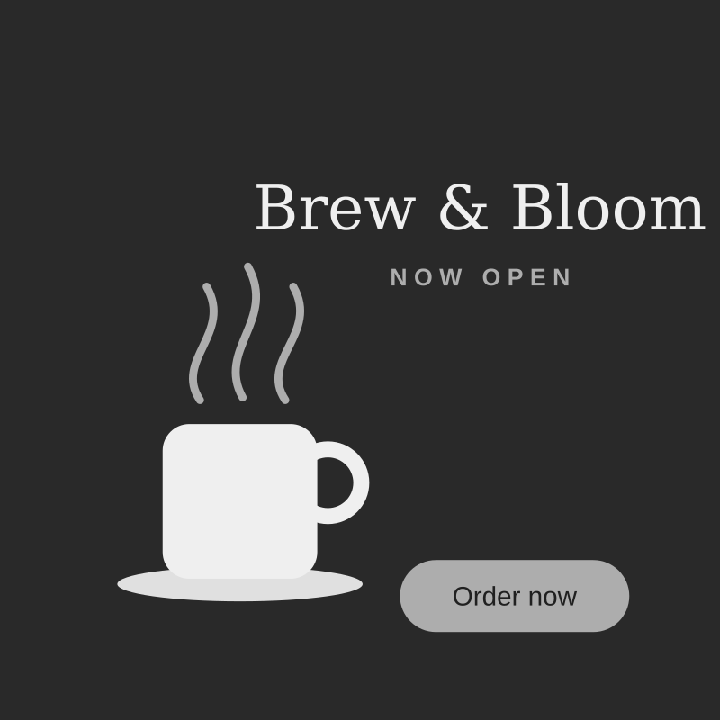

Brew & Bloom advert
A 15-second internet advertisement for a new café, aimed at students and young workers. It uses motion tweens and an Order now button that links to online ordering.
What I learned: strong contrast makes a call to action easy to find.